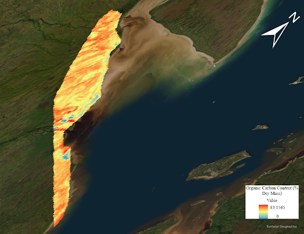

Limitations and Reuse Potential
Source:vignettes/web_only/limitation_reuse.Rmd
limitation_reuse.RmdOverview
This article discusses how the carbcontpred package can
be customized to fit your specific objectives and circumstances
regarding the prediction of soil properties. Customization includes the
type of data used for processing as well as the functions within
carbcontpred package itself. The article also discusses
some limitations of the carbcontpred package.
Using dry or wet soil samples
The carbcontpred package uses dried soil samples for the
example data sets due to the high water content in the samples affecting
the performance of the predictions as mentioned in this article.
However, soil samples from drier areas than the peatlands in the Hudson
Bay Lowlands may benefit from utilizing wet soil samples instead. The
water content within drier samples may be low enough that it would only
have a small effect on the prediction accuracy (Ji et al., 2015). The
drying process may lead to the loss of some carbon content within
samples, and so dried soil samples that already had little water content
beforehand may actually have a worse prediction accuracy than when they
were wet. Thus, in some cases, using the wet soil samples for the
carbcontpred package may lead to better prediction
performance than if you were to use the dried soil samples. In the case
of the example data sets, the soil samples were collected from peatlands
which have a very high water content so the dried soil samples yielded
better prediction accuracy (Price & Schlotzhauer, 1999).
Continuity between cpred and mappred inputs and outputs
We recommend that you keep the location of the soil samples for
cpred and the ROI for mappred within the same
area or nearby. Although models such as the linear regression model
built in cpred can used either local or global data sets,
the prediction performance using global data is worse than the
performance for the local data. Additionally, the predictions from the
linear regression model will likely not be helpful for predicting the
organic carbon content of ROIs in different areas. The soil in a
different area may contain minerals or other properties that affect the
reflectance spectra, thus making predictions from one area to another
very susceptible to covariables (de Sousa Mendes et al., 2022). We
recommend at least keeping the type of soil or ground consistent between
the soil samples for cpred and the ROI for
mappred. The example in the carbcontpred
package uses an ROI that remains within ~200 km2 of the soil
sample sites and covers mostly peatland, the same type of area as where
the soil samples were collected from.
mappred linear equation
The mappred function utilizes a linear equation to
predict the organic carbon content of an ROI data table using its
reflectance values. The equation is as follows:
[1]\[\begin{equation} \label{eq:1}y = β*α + α*x*-β\end{equation}\]
where α represents a coefficient extracted from predictions made
by cpred, β is a manually inputted value, x represents the
reflectance values of the points from the ROI data file, and y
represents the predicted organic carbon of the points.
The values of β can be adjusted depending on the specific type of
soil or soil properties you are dealing with. However, β must be
adjusted so that β*α should never be above 100 or below 0 as such values
are unrealistic for a percentage which is what y represents. The example
for mappred adapts the equation by replacing β with 3 as
follows:
[2]\[\begin{equation} \label{eq:2}y = 3*α + α*x*-3\end{equation}\]
where α represents a coefficient extracted from predictions made
by cpred, x represents the reflectance values of the points
from the ROI data file, and y represents the predicted organic carbon of
the points.
This equation is written in this section of
mappred.R:
predicted_carbon <- 3 * as.vector(coefficient) + as.vector(coefficient) * as.numeric(ROI$B1) * -3Here, α is represented through as.vector(coefficient), β
is represented through 3, x is represented through
as.numeric(ROI$B1), and y is represented through
predicted_carbon.
Data loss between ENVI and ArcGIS Pro
It should be noted that using the two softwares ENVI and ArcGIS Pro
for extraction and visualization of an ROI data file respectively as
shown in this article
can lead to some loss of data. For example, visualizing the
ROI_Predicted_Carbon.csv data file on ArcGIS Pro leads to
some of the data missing in the raster:

Figure 1. A raster of the Hudson Bay Lowlands
showing the predicted organic carbon content in percent dry mass of the
Region of Interest (ROI). The image is generated using the data file
MOD09GA.A2022276.h13v03.061.2022278035218 from NASA and the
carbcontpred package.
Reuse for different soil properties and areas
While carbcontpred creates a predictive model and map
for carbon stock through spectral reflectance, the package can be
adapted for a variety of other uses. Different soil properties can be
used as the predictor in cpred such as peat content,
gravimetric water content, and bulk density. The response in
cpred can be other different soil chemical properties such
as nitrogen or inorganic carbon content. Additionally,
carbcontpred can be customized to predict soil properties
not only for other peatland regions in the world, but also other
ecosystems and biomes.
References
global spectral modelling of soil organic carbon and total nitrogen using visible-near-infrared spectroscopy.
Journal of Environmental Management, 317, 115383. https://doi.org/10.1016/j.jenvman.2022.115383
storage changes in peat: the case of a mined peatland. Hydrological Processes, 13(16), 2591-2601.
https://doi.org/10.1002/(SICI)1099-1085(199911)13:16<2591::AID-HYP933>3.0.CO;2-E
proximally sensed vis–NIR soil spectra and their calibrations. European Journal of Soil Science, 66(3),
555-565. https://doi.org/10.1111/ejss.12239